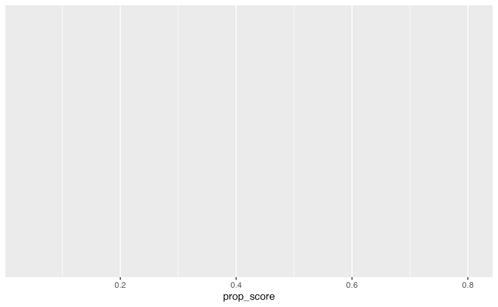

Simulating Causal Data: A Step-by-Step Guide
simulate-causal-data.Rmd🧪 Why Simulate Causal Data?
Simulating data helps us validate assumptions and understand the behavior of causal estimators under controlled conditions. It’s also a great tool for teaching.
1. 🎲 Simulate Covariates
set.seed(123)
n <- 1000
X1 <- rnorm(n, mean = 50, sd = 10) # Age
X2 <- rbinom(n, 1, 0.5) # Gender (0/1)
X3 <- rnorm(n, mean = 50000, sd = 15000) # Income
covariates <- data.frame(X1, X2, X3)
head(covariates)## X1 X2 X3
## 1 44.39524 0 37685.20
## 2 47.69823 0 45391.14
## 3 65.58708 0 36468.53
## 4 50.70508 1 59406.03
## 5 51.29288 0 66805.33
## 6 67.15065 1 81908.202. 🧮 Simulate Treatment Assignment
We use a logistic model for treatment assignment based on covariates:
logit <- -3 + 0.05 * X1 + 0.8 * X2 - 0.00002 * X3
prob_treat <- 1 / (1 + exp(-logit))
W <- rbinom(n, 1, prob_treat)3. ✨ Define Potential Outcomes
Y0 <- 0.5 * X1 + 2 * X2 + rnorm(n, 0, 5)
Y1 <- Y0 + 5 # Treatment adds 5 units4. 📊 Create Observed Outcome
Y_obs <- ifelse(W == 1, Y1, Y0)
data <- covariates %>%
mutate(treatment = W,
Y0 = Y0,
Y1 = Y1,
Y_obs = Y_obs)
head(data)## X1 X2 X3 treatment Y0 Y1 Y_obs
## 1 44.39524 0 37685.20 0 21.44608 26.44608 21.44608
## 2 47.69823 0 45391.14 1 22.21033 27.21033 27.21033
## 3 65.58708 0 36468.53 1 25.55272 30.55272 30.55272
## 4 50.70508 1 59406.03 0 23.86612 28.86612 23.86612
## 5 51.29288 0 66805.33 0 38.63889 43.63889 38.63889
## 6 67.15065 1 81908.20 0 35.38825 40.38825 35.388255. 📏 Estimate True vs. Observed Effects
true_ate <- mean(Y1 - Y0)
est_ate <- mean(data$Y_obs[data$treatment == 1]) - mean(data$Y_obs[data$treatment == 0])
cat("True ATE:", round(true_ate, 2), "\n")## True ATE: 5## Estimated ATE (unadjusted): 7.96. 📉 Visualize Propensity Score Overlap
data$prop_score <- prob_treat
ggplot(data, aes(x = prop_score, fill = factor(treatment)))
geom_density(alpha = 0.5)## geom_density: na.rm = FALSE, orientation = NA, outline.type = upper
## stat_density: na.rm = FALSE, orientation = NA
## position_identity
labs(title = "Propensity Score Overlap",
x = "Propensity Score", fill = "Treatment")## $x
## [1] "Propensity Score"
##
## $fill
## [1] "Treatment"
##
## $title
## [1] "Propensity Score Overlap"
##
## attr(,"class")
## [1] "labels"
theme_minimal()## List of 136
## $ line :List of 6
## ..$ colour : chr "black"
## ..$ linewidth : num 0.5
## ..$ linetype : num 1
## ..$ lineend : chr "butt"
## ..$ arrow : logi FALSE
## ..$ inherit.blank: logi TRUE
## ..- attr(*, "class")= chr [1:2] "element_line" "element"
## $ rect :List of 5
## ..$ fill : chr "white"
## ..$ colour : chr "black"
## ..$ linewidth : num 0.5
## ..$ linetype : num 1
## ..$ inherit.blank: logi TRUE
## ..- attr(*, "class")= chr [1:2] "element_rect" "element"
## $ text :List of 11
## ..$ family : chr ""
## ..$ face : chr "plain"
## ..$ colour : chr "black"
## ..$ size : num 11
## ..$ hjust : num 0.5
## ..$ vjust : num 0.5
## ..$ angle : num 0
## ..$ lineheight : num 0.9
## ..$ margin : 'margin' num [1:4] 0points 0points 0points 0points
## .. ..- attr(*, "unit")= int 8
## ..$ debug : logi FALSE
## ..$ inherit.blank: logi TRUE
## ..- attr(*, "class")= chr [1:2] "element_text" "element"
## $ title : NULL
## $ aspect.ratio : NULL
## $ axis.title : NULL
## $ axis.title.x :List of 11
## ..$ family : NULL
## ..$ face : NULL
## ..$ colour : NULL
## ..$ size : NULL
## ..$ hjust : NULL
## ..$ vjust : num 1
## ..$ angle : NULL
## ..$ lineheight : NULL
## ..$ margin : 'margin' num [1:4] 2.75points 0points 0points 0points
## .. ..- attr(*, "unit")= int 8
## ..$ debug : NULL
## ..$ inherit.blank: logi TRUE
## ..- attr(*, "class")= chr [1:2] "element_text" "element"
## $ axis.title.x.top :List of 11
## ..$ family : NULL
## ..$ face : NULL
## ..$ colour : NULL
## ..$ size : NULL
## ..$ hjust : NULL
## ..$ vjust : num 0
## ..$ angle : NULL
## ..$ lineheight : NULL
## ..$ margin : 'margin' num [1:4] 0points 0points 2.75points 0points
## .. ..- attr(*, "unit")= int 8
## ..$ debug : NULL
## ..$ inherit.blank: logi TRUE
## ..- attr(*, "class")= chr [1:2] "element_text" "element"
## $ axis.title.x.bottom : NULL
## $ axis.title.y :List of 11
## ..$ family : NULL
## ..$ face : NULL
## ..$ colour : NULL
## ..$ size : NULL
## ..$ hjust : NULL
## ..$ vjust : num 1
## ..$ angle : num 90
## ..$ lineheight : NULL
## ..$ margin : 'margin' num [1:4] 0points 2.75points 0points 0points
## .. ..- attr(*, "unit")= int 8
## ..$ debug : NULL
## ..$ inherit.blank: logi TRUE
## ..- attr(*, "class")= chr [1:2] "element_text" "element"
## $ axis.title.y.left : NULL
## $ axis.title.y.right :List of 11
## ..$ family : NULL
## ..$ face : NULL
## ..$ colour : NULL
## ..$ size : NULL
## ..$ hjust : NULL
## ..$ vjust : num 1
## ..$ angle : num -90
## ..$ lineheight : NULL
## ..$ margin : 'margin' num [1:4] 0points 0points 0points 2.75points
## .. ..- attr(*, "unit")= int 8
## ..$ debug : NULL
## ..$ inherit.blank: logi TRUE
## ..- attr(*, "class")= chr [1:2] "element_text" "element"
## $ axis.text :List of 11
## ..$ family : NULL
## ..$ face : NULL
## ..$ colour : chr "grey30"
## ..$ size : 'rel' num 0.8
## ..$ hjust : NULL
## ..$ vjust : NULL
## ..$ angle : NULL
## ..$ lineheight : NULL
## ..$ margin : NULL
## ..$ debug : NULL
## ..$ inherit.blank: logi TRUE
## ..- attr(*, "class")= chr [1:2] "element_text" "element"
## $ axis.text.x :List of 11
## ..$ family : NULL
## ..$ face : NULL
## ..$ colour : NULL
## ..$ size : NULL
## ..$ hjust : NULL
## ..$ vjust : num 1
## ..$ angle : NULL
## ..$ lineheight : NULL
## ..$ margin : 'margin' num [1:4] 2.2points 0points 0points 0points
## .. ..- attr(*, "unit")= int 8
## ..$ debug : NULL
## ..$ inherit.blank: logi TRUE
## ..- attr(*, "class")= chr [1:2] "element_text" "element"
## $ axis.text.x.top :List of 11
## ..$ family : NULL
## ..$ face : NULL
## ..$ colour : NULL
## ..$ size : NULL
## ..$ hjust : NULL
## ..$ vjust : num 0
## ..$ angle : NULL
## ..$ lineheight : NULL
## ..$ margin : 'margin' num [1:4] 0points 0points 2.2points 0points
## .. ..- attr(*, "unit")= int 8
## ..$ debug : NULL
## ..$ inherit.blank: logi TRUE
## ..- attr(*, "class")= chr [1:2] "element_text" "element"
## $ axis.text.x.bottom : NULL
## $ axis.text.y :List of 11
## ..$ family : NULL
## ..$ face : NULL
## ..$ colour : NULL
## ..$ size : NULL
## ..$ hjust : num 1
## ..$ vjust : NULL
## ..$ angle : NULL
## ..$ lineheight : NULL
## ..$ margin : 'margin' num [1:4] 0points 2.2points 0points 0points
## .. ..- attr(*, "unit")= int 8
## ..$ debug : NULL
## ..$ inherit.blank: logi TRUE
## ..- attr(*, "class")= chr [1:2] "element_text" "element"
## $ axis.text.y.left : NULL
## $ axis.text.y.right :List of 11
## ..$ family : NULL
## ..$ face : NULL
## ..$ colour : NULL
## ..$ size : NULL
## ..$ hjust : num 0
## ..$ vjust : NULL
## ..$ angle : NULL
## ..$ lineheight : NULL
## ..$ margin : 'margin' num [1:4] 0points 0points 0points 2.2points
## .. ..- attr(*, "unit")= int 8
## ..$ debug : NULL
## ..$ inherit.blank: logi TRUE
## ..- attr(*, "class")= chr [1:2] "element_text" "element"
## $ axis.text.theta : NULL
## $ axis.text.r :List of 11
## ..$ family : NULL
## ..$ face : NULL
## ..$ colour : NULL
## ..$ size : NULL
## ..$ hjust : num 0.5
## ..$ vjust : NULL
## ..$ angle : NULL
## ..$ lineheight : NULL
## ..$ margin : 'margin' num [1:4] 0points 2.2points 0points 2.2points
## .. ..- attr(*, "unit")= int 8
## ..$ debug : NULL
## ..$ inherit.blank: logi TRUE
## ..- attr(*, "class")= chr [1:2] "element_text" "element"
## $ axis.ticks : list()
## ..- attr(*, "class")= chr [1:2] "element_blank" "element"
## $ axis.ticks.x : NULL
## $ axis.ticks.x.top : NULL
## $ axis.ticks.x.bottom : NULL
## $ axis.ticks.y : NULL
## $ axis.ticks.y.left : NULL
## $ axis.ticks.y.right : NULL
## $ axis.ticks.theta : NULL
## $ axis.ticks.r : NULL
## $ axis.minor.ticks.x.top : NULL
## $ axis.minor.ticks.x.bottom : NULL
## $ axis.minor.ticks.y.left : NULL
## $ axis.minor.ticks.y.right : NULL
## $ axis.minor.ticks.theta : NULL
## $ axis.minor.ticks.r : NULL
## $ axis.ticks.length : 'simpleUnit' num 2.75points
## ..- attr(*, "unit")= int 8
## $ axis.ticks.length.x : NULL
## $ axis.ticks.length.x.top : NULL
## $ axis.ticks.length.x.bottom : NULL
## $ axis.ticks.length.y : NULL
## $ axis.ticks.length.y.left : NULL
## $ axis.ticks.length.y.right : NULL
## $ axis.ticks.length.theta : NULL
## $ axis.ticks.length.r : NULL
## $ axis.minor.ticks.length : 'rel' num 0.75
## $ axis.minor.ticks.length.x : NULL
## $ axis.minor.ticks.length.x.top : NULL
## $ axis.minor.ticks.length.x.bottom: NULL
## $ axis.minor.ticks.length.y : NULL
## $ axis.minor.ticks.length.y.left : NULL
## $ axis.minor.ticks.length.y.right : NULL
## $ axis.minor.ticks.length.theta : NULL
## $ axis.minor.ticks.length.r : NULL
## $ axis.line : list()
## ..- attr(*, "class")= chr [1:2] "element_blank" "element"
## $ axis.line.x : NULL
## $ axis.line.x.top : NULL
## $ axis.line.x.bottom : NULL
## $ axis.line.y : NULL
## $ axis.line.y.left : NULL
## $ axis.line.y.right : NULL
## $ axis.line.theta : NULL
## $ axis.line.r : NULL
## $ legend.background : list()
## ..- attr(*, "class")= chr [1:2] "element_blank" "element"
## $ legend.margin : 'margin' num [1:4] 5.5points 5.5points 5.5points 5.5points
## ..- attr(*, "unit")= int 8
## $ legend.spacing : 'simpleUnit' num 11points
## ..- attr(*, "unit")= int 8
## $ legend.spacing.x : NULL
## $ legend.spacing.y : NULL
## $ legend.key : list()
## ..- attr(*, "class")= chr [1:2] "element_blank" "element"
## $ legend.key.size : 'simpleUnit' num 1.2lines
## ..- attr(*, "unit")= int 3
## $ legend.key.height : NULL
## $ legend.key.width : NULL
## $ legend.key.spacing : 'simpleUnit' num 5.5points
## ..- attr(*, "unit")= int 8
## $ legend.key.spacing.x : NULL
## $ legend.key.spacing.y : NULL
## $ legend.frame : NULL
## $ legend.ticks : NULL
## $ legend.ticks.length : 'rel' num 0.2
## $ legend.axis.line : NULL
## $ legend.text :List of 11
## ..$ family : NULL
## ..$ face : NULL
## ..$ colour : NULL
## ..$ size : 'rel' num 0.8
## ..$ hjust : NULL
## ..$ vjust : NULL
## ..$ angle : NULL
## ..$ lineheight : NULL
## ..$ margin : NULL
## ..$ debug : NULL
## ..$ inherit.blank: logi TRUE
## ..- attr(*, "class")= chr [1:2] "element_text" "element"
## $ legend.text.position : NULL
## $ legend.title :List of 11
## ..$ family : NULL
## ..$ face : NULL
## ..$ colour : NULL
## ..$ size : NULL
## ..$ hjust : num 0
## ..$ vjust : NULL
## ..$ angle : NULL
## ..$ lineheight : NULL
## ..$ margin : NULL
## ..$ debug : NULL
## ..$ inherit.blank: logi TRUE
## ..- attr(*, "class")= chr [1:2] "element_text" "element"
## $ legend.title.position : NULL
## $ legend.position : chr "right"
## $ legend.position.inside : NULL
## $ legend.direction : NULL
## $ legend.byrow : NULL
## $ legend.justification : chr "center"
## $ legend.justification.top : NULL
## $ legend.justification.bottom : NULL
## $ legend.justification.left : NULL
## $ legend.justification.right : NULL
## $ legend.justification.inside : NULL
## $ legend.location : NULL
## $ legend.box : NULL
## $ legend.box.just : NULL
## $ legend.box.margin : 'margin' num [1:4] 0cm 0cm 0cm 0cm
## ..- attr(*, "unit")= int 1
## $ legend.box.background : list()
## ..- attr(*, "class")= chr [1:2] "element_blank" "element"
## $ legend.box.spacing : 'simpleUnit' num 11points
## ..- attr(*, "unit")= int 8
## [list output truncated]
## - attr(*, "class")= chr [1:2] "theme" "gg"
## - attr(*, "complete")= logi TRUE
## - attr(*, "validate")= logi TRUE